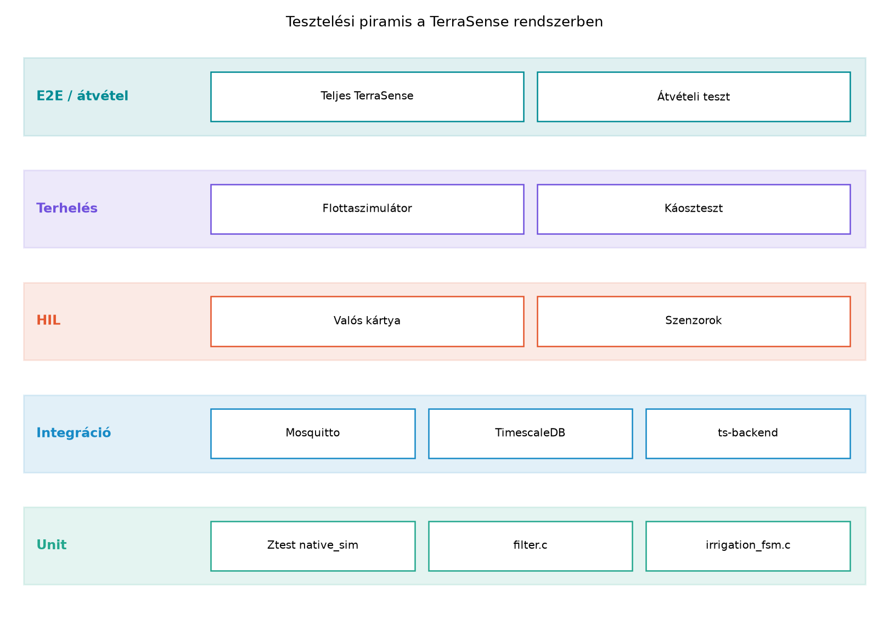
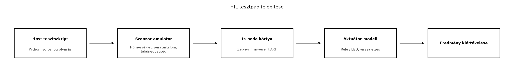

A TerraSense fejlesztése során a ts-node firmware-t és a
ts-backend ingestjét külön-külön már teszteltük, de a
valódi hibák gyakran a határokon jelentkeznek: amikor a broker
újraindul, a hálózat megszakad, vagy száz virtuális node egyszerre küldi
a telemetriát. Egy integrációs teszt például felfedi, hogy a
ts-backend nem kezeli a duplikált MQTT-üzeneteket, vagy
hogy a TimescaleDB séma nem felel meg a valós üzenetformátumnak. A
terheléses teszt pedig megmutatja, hogy az ingest szűk keresztmetszete
nem a broker, hanem a backend tranzakciókezelése. Ebben az alfejezetben
felépítjük azt a tesztelési piramist, amely a hoston futó unit
tesztektől a konténeres integrációs teszteken át a szimulált flottáig és
a valódi hardvert használó HIL-tesztpadig vezet.
Definíció. A tesztelési piramis (test pyramid) a szoftvertesztelés klasszikus modellje, amely a teszteket végrehajtási költségük és számuk szerint rétegekbe rendezi: alul a gyors, sok apró unit teszt, középen a kisebb számú integrációs teszt, felül pedig a kevés, lassú rendszer- vagy end-to-end (E2E) teszt áll. IoT-rendszerben a piramis kiegészül a HIL (hardware-in-the-loop) és a terheléses teszt szintjével, mert a szoftver helyessége mellett a hardverrel való együttműködést és a skálázhatóságot is igazolni kell.
A TerraSense esetében a piramis rétegei a következőképpen alakulnak.
A legalsó réteg a ts-node firmware hoston futtatott Ztest
unit tesztjei, amelyeket az Eszközszoftver
tesztelése a hoston alfejezetben készítettünk el. Fölötte az
integrációs tesztek a ts-backend és a ts-gw
egyes komponenseit valódi függőségekkel (Mosquitto, TimescaleDB)
tesztelik konténerekben. A terheléses teszt sok virtuális node-ot
szimulál, és azt vizsgálja, hogy a backend képes-e lépést tartani a
telemetriaárammal. A HIL-tesztpad valódi fejlesztőkártyát és szenzorokat
kapcsol a teszthurokba, hogy a hardverközeli hibákat is felfedje. Végül
a záróprojekt átvételi tesztje a teljes rendszert ellenőrzi.

Az ábra szöveges leírása: a piramis alján a legtöbb, leggyorsabb
teszt található (filter.c, irrigation_fsm.c
Ztest tesztjei); fölötte az integrációs tesztek a backend és a
broker/adatbázis együttműködését ellenőrzik; a HIL-tesztpad valódi
mikrovezérlőt használ; a terheléses és E2E tesztek a legritkábbak, de a
legnagyobb lefedettséget adják.
Definíció. A HIL-teszt (hardware-in-the-loop) olyan tesztelési módszer, amelyben a valódi beágyazott hardver fut, de a környezetét (szenzorjelek, aktuátorok, rádiós hálózat) szimulátorok vagy laboratóriumi műszerek helyettesítik. Így a firmware a tényleges perifériákkal és időzítésekkel fut, miközben a tesztkörnyezet determinisztikusan előállítható és ismételhető.
Definíció. A terheléses teszt (load test) a rendszer viselkedését méri a várható vagy annál nagyobb terhelés alatt, például sok eszköz egyidejű üzenetküldése esetén. Célja az átviteli képesség, a késleltetés és az erőforrás-felhasználás számszerűsítése, valamint a szűk keresztmetszetek azonosítása.
A tesztelési szintek közötti választás mindig a hiba költsége és a teszt végrehajtási ideje közötti kompromisszum. Az alábbi táblázat összefoglalja a fő szempontokat.
| Szint | Milyen kérdésre válaszol? | Környezet | Gyakoriság | Költség |
|---|---|---|---|---|
| Unit | Helyes-e egy függvény vagy modul? | Host, mockokkal | Minden commitnál | Alacsony |
| Integráció | Együttműködnek-e a komponensek? | Konténerek, valódi broker/DB | Napi, merge-kor | Közepes |
| HIL | Működik-e a firmware a hardverrel? | Fejlesztőkártya, műszerek | Kiadás előtt | Magas |
| Terhelés | Bírja-e a várható flottaméretet? | Szimulált flotta | Terhelési kampányban | Közepes |
| E2E | Megfelel-e a teljes rendszer a követelményeknek? | Teljes stack | Átvételkor | Magas |
A TerraSense fejlesztése során az a gyakorlati szabály, hogy minden új backend-funkcióhoz legalább egy integrációs teszt tartozzon, a terheléses tesztet pedig a flottaméret tervezésekor (például „100 node, 1 Hz telemetria”) futtassuk. A HIL-t a Zephyr BSP vagy az alacsony szintű periféria-illesztő módosításakor éri meg bevetni.
Munkakönyvtár:
mkdir -p ~/iot-labor/i063 && cd ~/iot-labor/i063
python3 -m venv .venv
. .venv/bin/activate
pip install 'paho-mqtt==2.1.0'A labor előfeltétele az Ingest: MQTT-ből a
backendbe, idempotensen alfejezetben elkészített
ts-backend projekt, amelyet a
~/iot-labor/i044/ts-backend könyvtárban tárolunk. A labor
során a projekt src/test/ könyvtára alá tesszük az
integrációs tesztet, a ~/iot-labor/i063 munkakönyvtárba
pedig a flottaszimulátort. A teszt a Testcontainers segítségével külön,
izolált Mosquitto brokert és TimescaleDB-t indít, ezért nem függ a
~/iot-labor/stack/compose.yaml futó szolgáltatásaitól.
1. A tesztfüggőségek. A ts-backend
pom.xml fájljában a </properties>
zárótag után vegyük fel a Testcontainers BOM-ját, a
<dependencies> szakaszba pedig a teszt-hatókörű
függőségeket. A Paho MQTT 5 kliens már az Ingest:
MQTT-ből a backendbe, idempotensen alfejezetbeli
pom.xml-ben compile hatókörrel szerepel, ezért a teszt
segédosztálya ugyanazt a klienst használja, mint az éles ingest:
<dependencyManagement>
<dependencies>
<dependency>
<groupId>org.testcontainers</groupId>
<artifactId>testcontainers-bom</artifactId>
<version>1.20.3</version>
<type>pom</type>
<scope>import</scope>
</dependency>
</dependencies>
</dependencyManagement><dependency>
<groupId>org.springframework.boot</groupId>
<artifactId>spring-boot-starter-test</artifactId>
<scope>test</scope>
</dependency>
<dependency>
<groupId>org.testcontainers</groupId>
<artifactId>junit-jupiter</artifactId>
<scope>test</scope>
</dependency>
<dependency>
<groupId>org.testcontainers</groupId>
<artifactId>postgresql</artifactId>
<scope>test</scope>
</dependency>
<dependency>
<groupId>org.awaitility</groupId>
<artifactId>awaitility</artifactId>
<version>4.2.2</version>
<scope>test</scope>
</dependency>A spring-boot-starter-test a JUnit 5-öt, az AssertJ-t és
a Spring Boot tesztkontextusát hozza; a Testcontainers BOM a
junit-jupiter és a postgresql modul verzióját
egységesen 1.20.3-ra rögzíti. A Maven 3.9.9 és a Spring Boot 3.3.4 szülő
a fordítás és a Surefire futtatás verzióját is meghatározza.
2. A teszt-broker konfigurációja. A Mosquitto 2
alapértelmezésben csak a loopback interfészen figyel, ezért a
konténerben létrehozott listener bejegyzés nélkül a host
felől nem lehet kapcsolódni. A
src/test/resources/mosquitto-test.conf fájl csak a teszthez
készül, éles környezetben nem használjuk:
listener 1883 0.0.0.0
allow_anonymous true
persistence falseAz allow_anonymous true kizárólag a tesztkonténer
izolált hálózatán elfogadható; az éles TerraSense broker jelszófájlt és
TLS-t használ, ahogyan az MQTT biztonság és a PKI alfejezetekben szerepel. A
persistence false miatt a teszt végén nem marad vissza
brokerállapot.
3. Az integrációs teszt. A
src/test/java/com/terrasense/backend/IngestIntegrationTest.java
fájl teljes tartalma:
package com.terrasense.backend;
import static org.assertj.core.api.Assertions.assertThat;
import static org.awaitility.Awaitility.await;
import java.nio.charset.StandardCharsets;
import java.nio.file.Path;
import java.time.Duration;
import java.util.UUID;
import org.eclipse.paho.mqttv5.client.IMqttToken;
import org.eclipse.paho.mqttv5.client.MqttClient;
import org.eclipse.paho.mqttv5.client.MqttConnectionOptions;
import org.eclipse.paho.mqttv5.common.MqttException;
import org.eclipse.paho.mqttv5.common.MqttMessage;
import org.junit.jupiter.api.Test;
import org.springframework.beans.factory.annotation.Autowired;
import org.springframework.boot.test.context.SpringBootTest;
import org.springframework.jdbc.core.JdbcTemplate;
import org.springframework.test.context.DynamicPropertyRegistry;
import org.springframework.test.context.DynamicPropertySource;
import org.testcontainers.containers.GenericContainer;
import org.testcontainers.containers.PostgreSQLContainer;
import org.testcontainers.containers.wait.strategy.Wait;
import org.testcontainers.junit.jupiter.Container;
import org.testcontainers.junit.jupiter.Testcontainers;
import org.testcontainers.utility.DockerImageName;
import org.testcontainers.utility.MountableFile;
@Testcontainers
@SpringBootTest(
webEnvironment = SpringBootTest.WebEnvironment.RANDOM_PORT,
properties = {"spring.sql.init.mode=always"})
class IngestIntegrationTest {
private static final String SITE = "gh1";
private static final String NODE = "n001";
private static final String BOOT_ID = "boot-0001";
private static final long SEQ = 42L;
private static final String TOPIC =
"terrasense/" + SITE + "/" + NODE + "/telemetry";
private static final String CLIENT_ID = "ts-backend-it-" + UUID.randomUUID();
private static final String SPOOL_PATH = Path.of("target", "test-spool",
UUID.randomUUID().toString(), "ingest-retry.jsonl")
.toAbsolutePath().toString();
@Container
static final GenericContainer<?> mosquitto = new GenericContainer<>(
DockerImageName.parse("eclipse-mosquitto:2.0.18"))
.withExposedPorts(1883)
.withCopyFileToContainer(
MountableFile.forClasspathResource("mosquitto-test.conf"),
"/mosquitto/config/mosquitto.conf")
.withCommand("mosquitto", "-c", "/mosquitto/config/mosquitto.conf")
.waitingFor(Wait.forLogMessage(".*mosquitto version .* running.*", 1)
.withStartupTimeout(Duration.ofSeconds(60)));
@Container
static final PostgreSQLContainer<?> timescale = new PostgreSQLContainer<>(
DockerImageName.parse("timescale/timescaledb:2.17.2-pg16"))
.withDatabaseName("terrasense_it")
.withUsername("terra")
.withPassword("lab-password");
@DynamicPropertySource
static void properties(DynamicPropertyRegistry registry) {
registry.add("spring.datasource.url", timescale::getJdbcUrl);
registry.add("spring.datasource.username", timescale::getUsername);
registry.add("spring.datasource.password", timescale::getPassword);
registry.add("ingest.broker-uri", () -> "tcp://" + mosquitto.getHost()
+ ":" + mosquitto.getMappedPort(1883));
registry.add("ingest.client-id", () -> CLIENT_ID);
registry.add("ingest.topic-filter", () -> "terrasense/+/+/telemetry");
registry.add("ingest.spool-path", () -> SPOOL_PATH);
}
@Autowired
private JdbcTemplate jdbc;
@Test
void telemetryIngestIsIdempotentAndConflictsGoToDeadLetter() throws Exception {
String brokerUri = "tcp://" + mosquitto.getHost() + ":"
+ mosquitto.getMappedPort(1883);
try (MqttTestPublisher publisher = new MqttTestPublisher(brokerUri)) {
publisher.publish(TOPIC, payload(21.5));
await().atMost(Duration.ofSeconds(20))
.pollInterval(Duration.ofMillis(200))
.alias("az első telemetria megérkezése")
.untilAsserted(() ->
assertThat(countTelemetryRows()).isEqualTo(1));
// Ugyanaz az esemény újra: nem keletkezhet második sor.
publisher.publish(TOPIC, payload(21.5));
// Ugyanaz a kulcs, eltérő tartalom: a DLQ-ba kell kerülnie.
publisher.publish(TOPIC, payload(25.0));
await().atMost(Duration.ofSeconds(20))
.pollInterval(Duration.ofMillis(200))
.alias("a tartalmi ütközés DLQ-ba kerülése")
.untilAsserted(() ->
assertThat(countContentMismatches()).isEqualTo(1));
}
assertThat(countTelemetryRows()).isEqualTo(1);
String storedTemperature = jdbc.queryForObject("""
SELECT payload->'measurements'->'temperature'->>'value'
FROM telemetry
WHERE site = ? AND node_id = ? AND boot_id = ? AND seq = ?
""", String.class, SITE, NODE, BOOT_ID, SEQ);
assertThat(storedTemperature).isEqualTo("21.5");
assertThat(countContentMismatches()).isEqualTo(1);
}
private int countTelemetryRows() {
Integer count = jdbc.queryForObject("""
SELECT count(*) FROM telemetry
WHERE site = ? AND node_id = ? AND boot_id = ? AND seq = ?
""", Integer.class, SITE, NODE, BOOT_ID, SEQ);
return count == null ? 0 : count;
}
private int countContentMismatches() {
Integer count = jdbc.queryForObject("""
SELECT count(*) FROM dead_letter
WHERE topic = ? AND reason LIKE ?
""", Integer.class, TOPIC, "%eltérő tartalom%");
return count == null ? 0 : count;
}
private static String payload(double temperatureC) {
return """
{"schema_version":1,"site":"%s","node_id":"%s","boot_id":"%s",
"seq":%d,"ts":1700000000000,
"measurements":{
"temperature":{"value":%s,"unit":"Cel","valid":true},
"humidity":{"value":55.0,"unit":"%%RH","valid":true},
"soil_moisture":{"value":30.0,"unit":"%%","valid":true}}}
""".formatted(SITE, NODE, BOOT_ID, SEQ, temperatureC);
}
private static final class MqttTestPublisher implements AutoCloseable {
private static final long PUBLISH_TIMEOUT_MS = 10_000L;
private final MqttClient client;
private MqttTestPublisher(String brokerUri) throws MqttException {
this.client = new MqttClient(
brokerUri, "it-publisher-" + UUID.randomUUID());
MqttConnectionOptions options = new MqttConnectionOptions();
options.setCleanStart(true);
options.setAutomaticReconnect(false);
options.setConnectionTimeout(10);
client.connect(options);
}
private void publish(String topic, String json) throws MqttException {
MqttMessage message =
new MqttMessage(json.getBytes(StandardCharsets.UTF_8));
message.setQos(1);
IMqttToken token = client.publish(topic, message);
token.waitForCompletion(PUBLISH_TIMEOUT_MS);
}
@Override
public void close() throws MqttException {
if (client.isConnected()) {
client.disconnect();
}
client.close();
}
}
}A teszt felépítése a következő. A PostgreSQLContainer a
timescale/timescaledb:2.17.2-pg16 image-et indítja
terrasense_it adatbázissal, és saját readiness-stratégiája
addig vár, amíg a PostgreSQL el nem fogadja a kapcsolatokat. A Spring
Boot spring.sql.init.mode=always beállítása miatt az Ingest: MQTT-ből a backendbe, idempotensen
alfejezetbeli schema.sql ebben az izolált adatbázisban fut
le, így a telemetry és a dead_letter tábla a
teszt indulására létezik. A Mosquitto konténer a
mosquitto-test.conf fájlt kapja, és a várakozás a „running”
naplósorra épül, nem csupán a nyitott portra; így a broker valóban fogad
kapcsolatot, mire a Spring kontextus elindul. A
@DynamicPropertySource a tényleges
ingest.broker-uri, ingest.client-id,
ingest.topic-filter és ingest.spool-path
kulcsokat írja felül, nem egy nem létező mqtt.broker.uri
property-t. A spool útvonala target/test-spool/ alá mutat,
ezért a teszt nem ír a fejlesztői spoolba, és a Maven clean
a maradékot eltakarítja.
Az idempotencia ellenőrzése szándékosan két üzenettel zárul. Az első
publikálás után az Awaitility legfeljebb 20 másodpercig várja, hogy a
(site, node_id, boot_id, seq) kulcson pontosan egy sor
legyen. Ezután a teszt elküldi ugyanazt az üzenetet, majd egy azonos
kulcsú, de eltérő hőmérsékletű változatot. Mivel ugyanaz a Paho kliens
ugyanarra a topicra QoS 1-gyel, sorrendben publikál, a backend egyetlen
callback-szálon dolgozza fel őket, ezért a DLQ-ba kerülő tartalmi
ütközés egyben azt is bizonyítja, hogy a megelőző duplikátum már
feldolgozódott. A teszt végén a telemetry táblában továbbra
is egy sor van, és az eredeti 21.5 értéket tartalmazza; a
dead_letter táblában pontosan egy, „eltérő tartalom” okú
sor található. A Thread.sleep(1000) helyett minden
várakozás feltételalapú és maximális határidős, ezért lassabb broker
vagy adatbázis mellett is determinisztikus, hiba esetén pedig az
Awaitility kiírja az utolsó állapotot.
A MqttTestPublisher AutoCloseable, ezért a
try-with-resources a teszt kivétele esetén is lezárja a
kapcsolatot. A publish a Paho MQTT 5
IMqttToken.waitForCompletion hívásával megvárja a QoS 1-es
PUBACK-ot, így a teszt nem attól függ, hogy a hálózat mikor szállítja az
üzenetet.
4. A teszt futtatása. A ts-backend
projekt gyökerében:
cd ~/iot-labor/i044/ts-backend
mvn -B clean verifyA kimenet alakja (illusztratív, a konkrét időzítések és a konténerindítási sorok gépfüggők):
[INFO] Tests run: 1, Failures: 0, Errors: 0, Skipped: 0
[INFO] BUILD SUCCESSA Tests run: 1 azt jelenti, hogy a teszt lefutott, nem
azt, hogy a Docker nélküli környezetben is lefutna: a Testcontainers
Docker daemont igényel. A példát a lektorálási környezetben nem
futtattuk Maven, Docker vagy Testcontainers alatt; a Java-forrás
statikus ellenőrzése történt, a tényleges mvn verify
eredménye a labor elvégzésének része.
5. A flottaszimulátor. A
~/iot-labor/i063/flotta-szimulator.py fájl teljes tartalma.
A szimulátor a kanonikus, 1-es verziójú measurements
payloadot küldi, node-onként 1-től induló seq-vel, QoS
1-gyel, és csak a broker által nyugtázott üzeneteket számolja
elküldöttnek:
#!/usr/bin/env python3
import argparse
import json
import random
import threading
import time
import paho.mqtt.client as mqtt
from paho.mqtt.enums import CallbackAPIVersion
def gen_payload(site, node_id, boot_id, seq):
return json.dumps({
"schema_version": 1,
"site": site,
"node_id": node_id,
"boot_id": boot_id,
"seq": seq,
"ts": int(time.time() * 1000),
"measurements": {
"temperature": {
"value": round(20 + random.uniform(-2, 2), 2),
"unit": "Cel", "valid": True,
},
"humidity": {
"value": round(50 + random.uniform(-10, 10), 1),
"unit": "%RH", "valid": True,
},
"soil_moisture": {
"value": round(30 + random.uniform(-5, 5), 1),
"unit": "%", "valid": True,
},
},
}, separators=(",", ":"))
def main():
ap = argparse.ArgumentParser()
ap.add_argument("--broker", default="localhost")
ap.add_argument("--port", type=int, default=1883)
ap.add_argument("--site", default="gh1")
ap.add_argument("--boot-id", default="sim-boot")
ap.add_argument("--nodes", type=int, default=50)
ap.add_argument("--interval", type=float, default=1.0)
ap.add_argument("--duration", type=float, default=30.0)
ap.add_argument("--publish-timeout", type=float, default=10.0)
args = ap.parse_args()
connected = threading.Event()
acked = 0
acked_lock = threading.Lock()
def on_connect(client, userdata, flags, reason_code, properties):
if reason_code.is_failure:
print(f"Kapcsolódási hiba: {reason_code}", flush=True)
return
connected.set()
def on_publish(client, userdata, mid, reason_code, properties):
nonlocal acked
with acked_lock:
acked += 1
client = mqtt.Client(
CallbackAPIVersion.VERSION2,
client_id=f"flotta-szim-{int(time.time())}",
)
client.on_connect = on_connect
client.on_publish = on_publish
client.connect(args.broker, args.port, keepalive=60)
client.loop_start()
if not connected.wait(timeout=10.0):
client.loop_stop()
raise SystemExit("Nincs CONNACK 10 másodpercen belül.")
nodes = [f"n{n + 1:03d}" for n in range(args.nodes)]
round_no = 0
attempted = 0
queued = 0
rejected = 0
start = time.monotonic()
try:
while time.monotonic() - start < args.duration:
round_no += 1
# Minden node minden körben publikál, ezért a közös körszámláló
# node-onként 1-től induló, monoton seq-et ad.
for node in nodes:
topic = f"terrasense/{args.site}/{node}/telemetry"
payload = gen_payload(args.site, node, args.boot_id, round_no)
info = client.publish(topic, payload, qos=1)
attempted += 1
if info.rc != mqtt.MQTT_ERR_SUCCESS:
rejected += 1
continue
queued += 1
try:
info.wait_for_publish(timeout=args.publish_timeout)
except RuntimeError:
pass
if not info.is_published():
print(f"PUBACK-időtúllépés: {topic} seq={round_no}",
flush=True)
time.sleep(args.interval)
finally:
client.disconnect()
client.loop_stop()
elapsed = time.monotonic() - start
with acked_lock:
acked_snapshot = acked
unacked = queued - acked_snapshot
print(f"Kísérlet: {attempted}, sorba állítva: {queued}, "
f"elutasítva: {rejected}, PUBACK: {acked_snapshot}, "
f"nyugtázatlan: {unacked}")
print(f"Átlagos nyugtázott sebesség: "
f"{acked_snapshot / elapsed:.2f} üzenet/s")
print(f"Node-onkénti seq tartomány: 1..{round_no}")
if __name__ == "__main__":
main()A számlálók jelentése szétválik. Az attempted a
publish hívások száma, a queued a kliens által
sikeresen sorba állított üzeneteké, a rejected a helyi hiba
miatt elutasítottaké, az acked pedig az
on_publish callback által látott PUBACK-oké. A QoS 1-es
üzenet csak akkor számít átadottnak, ha a wait_for_publish
visszatért és az is_published() igaz; a puszta
publish visszatérése nem jelent brokeres nyugtázást. A
ciklus végén a disconnect csak azután fut, hogy minden
sorba állított üzenetre megérkezett a PUBACK vagy lejárt a publikálási
időtúllépés, ezért a nyugtázatlanok száma valódi hiányt jelez, nem a
leállított event loop miatt elveszett számlálást.
6. A terheléses teszt futtatása. Indítsuk el a stack
brokert, a TimescaleDB-t és a backendet (a ts-backend az Ingest: MQTT-ből a backendbe, idempotensen
alfejezetbeli vagy a későbbi, migrált sémával is futhat):
docker compose -f ~/iot-labor/stack/compose.yaml up -d lab-broker lab-timescaledb ts-backend
python3 flotta-szimulator.py --broker localhost --port 1883 \
--nodes 100 --interval 0.5 --duration 30A szimulátor kimenetének alakja (illusztratív):
Kísérlet: 6000, sorba állítva: 6000, elutasítva: 0, PUBACK: 6000, nyugtázatlan: 0
Átlagos nyugtázott sebesség: 199.87 üzenet/s
Node-onkénti seq tartomány: 1..60A PUBACK-szám a broker által átvett üzeneteket mutatja, a tárolt
egyedi események száma ettől eltérhet, mert a backend aszinkron dolgozza
fel az üzeneteket, és a duplikátumokat az idempotens beszúrás szűri ki.
A tárolt számot a nyers eseménytáblából kérdezhetjük le; az Ingest: MQTT-ből a backendbe, idempotensen
alfejezetbeli sémában ez a telemetry, az Idősoros adatbázisok és adatmodellezés-ös migráció
után a telemetry_ingest tábla:
docker compose -f ~/iot-labor/stack/compose.yaml exec -T lab-timescaledb \
psql -U terra -d terrasense -c \
"SELECT count(*) AS stored FROM telemetry_ingest \
WHERE site = 'gh1' AND boot_id = 'sim-boot';"A tényleges hiány a PUBACK és a stored
különbsége, miután az ingest befejezte a feldolgozást. A kettő közötti
eltérés nem feltétlenül hiba: a QoS 1 a brokerig garantál kézbesítést, a
backend ingestje és a tranzakció viszont néhány másodperccel lemaradhat.
A terheléses teszt során a ts-backend ingestjét a Megfigyelhetőség végponttól végpontig alfejezetben
bevezetett metrikákkal is figyeljük (például a feldolgozási késleltetés
percentilisei, a duplikátumok és a hiányzó seq-ek száma). A várt
eredmény nem egy pontos szám, hanem az, hogy a backend hosszabb időn át
stabilan feldolgozza a beérkező üzeneteket, a nyugtázott és a tárolt
egyedi események különbsége nem nő korlátlanul, és a monitorozott
késleltetés elfogadható marad.
A ts-node firmware valódi hardveren történő
teszteléséhez egy HIL-tesztpadot építünk. A tesztpad felépítése a
következő: a fejlesztőkártya (például egy Zephyr által támogatott ARM
kártya) a rajta futó ts-node firmware-rel; a szenzorok
helyett egy programozható szenzor-emulátor (például egy másik
mikrovezérlő vagy egy digitális-analóg konverter), amely a hőmérséklet,
páratartalom és talajnedvesség jeleit adja; az aktuátor (öntözőszelep)
helyett egy relé vagy LED, amelynek állapotát a host méri. A hoston futó
tesztkliens az UART vagy ethernet kapcsolaton kapja a firmware logjait,
és a tesztforgatókönyv vezérli az emulátort, valamint ellenőrzi a
firmware reakcióit.

A HIL-tesztpad előnye, hogy a firmware a tényleges
periféria-időzítésekkel fut, így a megszakítások, az ADC kalibráció és a
watchdog viselkedése is ellenőrizhető. A native_sim ezt nem
helyettesíti, de a HIL-tesztpad drága és lassú, ezért csak a kritikus
hardverfüggő részekhez használjuk, például a száraz érintkező
megszakításának vagy az alvásból ébredésnek a teszteléséhez.
A terheléses tesztet kiegészíthetjük káoszteszttel (chaos testing), amely során szándékosan hibákat idézünk elő a rendszerben, hogy megfigyeljük a helyreállást és az üzenetvesztés nélküli kézbesítést. Két tipikus jelenet a TerraSense esetében:
Broker-újraindítás: a flottaszimulátor futása közben a Mosquitto konténert leállítjuk és újraindítjuk. Az MQTT 5-ös kliensek (vagy a QoS 1/2 munkamenetek) újracsatlakoznak, és a ts-backend idempotens ingestje garantálja, hogy a duplikált üzenetek ne szennyezzék az adatbázist. A teszt sikeres, ha az újraindítás után a backend nem veszít el üzenetet, és nem rögzít duplikátumot.
Hálózatkiesés a gateway és a backend között: a
ts-gw store-and-forward puffere tárolja a telemetriát, amíg
a kapcsolat helyreáll, majd visszatölti az MQTT-n keresztül. A teszt
során a gateway hálózati interfészét leszűrjük (például
iptables DROP), majd visszaengedjük, és ellenőrizzük, hogy
a visszatöltés sorrendje és az seq sorszámok monoton
növekvőek maradnak.
| Hibatünet | Ok | Javítás |
|---|---|---|
Az IngestIntegrationTest BUILD FAILURE a
TimescaleDB kapcsolatnál |
A konténer nem állt készen, vagy a JDBC URL hibás | A PostgreSQLContainer saját readiness-stratégiája és a
getJdbcUrl() használata; ellenőrizzük, hogy a Docker daemon
fut, és hogy a spring.datasource.url nem mutat a fejlesztői
terrasense adatbázisra |
A teszt Connection refused hibát kap a Mosquitto
felé |
A broker a 2-es verzió alapértelmezése szerint csak a loopbacken figyel, vagy a konfigurációs fájl nem jutott el a konténerbe | Ellenőrizzük a mosquitto-test.conf
listener 1883 0.0.0.0 sorát és a
withCopyFileToContainer útvonalát; a várakozás a „running”
naplósorra épüljön |
A terheléses teszt során a ts-backend CPU-ja 100%, és a
késleltetés nő |
A telemetria feldolgozása szinkron, egy szálon történik, vagy a tranzakció túl nagy | A kódban az ingest kötegelt beszúrással dolgozik; a
@Scheduled feldolgozás és a tranzakcióméret
ellenőrzése |
| A káoszteszt után a TimescaleDB-ben duplikált rekordok jelennek meg | Az idempotencia kulcs (site, node_id, boot_id, seq) nem
egyedi a sémában, vagy az ingest nem ellenőrzi a duplikátumot |
A repository-ban a (site, node_id, boot_id, seq)
elsődleges kulcsot és az INSERT ... ON CONFLICT DO NOTHING
műveletet kell ellenőrizni |
| A HIL-tesztpadon a firmware nem válaszol | A soros port nem megfelelő, vagy a firmware assert miatt leállt | A hoston a dmesg-ben ellenőrizzük az USB-TTL eszközt; a
logokban keressük a watchdog vagy assert üzeneteket |
Azt hinni, hogy a unit tesztek elégségesek. A hoston futó Ztest tesztek gyorsak, de nem fedik fel a brokerrel való MQTT-kézfogás, a hálózati késleltetés vagy a sémaeltérés hibáit. Az integrációs teszt nélkül a backend és a broker együttműködését csak élesben tesztelnénk.
A terheléses tesztet a valós flotta méretével futtatni. A szimulátor által generált üzenetek nem helyettesítik a valódi eszközök hálózati viselkedését (például a rádiós ütközéseket vagy a változó késleltetést), ezért a kapott átviteli sebesség felső becslés. A terheléses teszt célja nem a pontos szám, hanem a szűk keresztmetszet megtalálása.
Az idempotencia teszt elhagyása. Ha az ingest
csak a ts időbélyeg alapján szúr be, akkor a QoS 1-es
újraküldés duplikátumot okozhat. Az integrációs tesztben ezért mindig a
(site, node_id, boot_id, seq) eseménykulcsot
teszteljük.
A HIL-tesztpadot a teljes firmware tesztelésére
használni. A HIL drága, ezért csak a hardverfüggő kódot
tesztelje; a logikát a hoston, a native_sim-mel
teszteljük.
(a) Fogalmi kérdés Ismertesse, miért nem elég a
hoston futó unit tesztek a ts-backend ingestjének hibáinak
felderítésére. Milyen hibatípusokat fed fel az integrációs
teszt?
(b) Tervezési feladat Tegyük fel, hogy a TerraSense flottája 200 node-ot tartalmaz, és mindegyik másodpercenként egy telemetriaüzenetet küld. Az ingest feldolgozási ideje üzenetenként átlagosan 5 ms. Számítsa ki, hány üzenet érkezik másodpercenként, és mekkora a backend processzor kihasználtsága, ha egyetlen szálon dolgozik fel. Számoljon azzal, hogy a feldolgozás során a CPU 80%-ban a backend logikát, 20%-ban a rendszer fut. (A pontos műveleti idő illusztratív, a valós méréshez profilozás kell.)
(c) Implementációs feladat A laborban bemutatott
szimulátor minden körben minden node-ra publikál, ezért a közös
körszámláló node-onként 1-től induló seq-et ad. Egészítse
ki a szimulátort explicit, node-onkénti seq-számlálóval,
amely akkor sem ugrik, ha egy node-ot kihagyunk a körből, és a futás
végén írja ki az összes nyugtázott (PUBACK-olt) üzenet számát és a mért
átlagos sebességet (üzenet/s). A QoS maradjon 1. A kódot a
~/iot-labor/i063/flotta-szimulator.py fájlba mentse, és
futtassa --nodes 20 --duration 10 paraméterekkel. Várható
kimenet: a script a szimuláció végén kiírja a nyugtázott üzenetszámot és
a sebességet.
(d) Hibakeresési feladat A terheléses teszt
során a ts-backend ingestje időnként ConnectionRefused
hibát dob a broker felé, amikor a broker újraindul. Milyen Paho MQTT 5
beállításokkal lehet a backend kliensét automatikus újracsatlakozásra
bírni? Írja le a setAutomaticReconnect, a
setCleanStart és a setSessionExpiryInterval
opciók szerepét, és indokolja, miért szükséges a
connectComplete callbackben újra feliratkozni a
terrasense/+/+/telemetry topicra.
Megoldás: A unit tesztek kizárólag a függvény logikáját ellenőrzik mockolt függőségekkel. Nem fedik fel a valódi brokerrel való kapcsolat hibáit (például az MQTT 5 tulajdonságok félreértelmezését), a TimescaleDB sémájának eltérését, vagy a hálózati késleltetésből adódó sorrendiségi problémákat. Az integrációs teszt valódi konténerekben futtatja a komponenseket, így ezek a hibák reprodukálhatók.
Megoldás: Az üzenetek másodpercenkénti száma:
A feldolgozási idő összesen:
A teljes CPU-kihasználtság tehát 100%, ezen belül a backend logika 800 ms/s-ot (80%), a rendszerfutás 200 ms/s-ot (20%) használ. Ezért párhuzamosítani kell a feldolgozást, vagy kötegelt beszúrást használni a TimescaleDB-be, különben a késleltetés növekszik és a backend túlterhelődik. A számítás illusztratív, a tényleges érték mérést igényel.
round_no
számlálója a normál futásban már node-onként 1-től induló, monoton
seq-et ad, mert minden körben minden node pontosan egyszer
publikál. Az alábbi módosítás ezt teszi explicitté, és lehetővé teszi
egyes node-ok kihagyását anélkül, hogy a többi node seq-je
ugrana. A QoS szándékosan 1 marad, tehát a mérés kézbesítési feltételei
nem változnak; a valódi hiba, amit a labor javít, a PUBACK-várakozás és
a külön nyugtázott számláló:seq_per_node = {node: 0 for node in nodes}
skipped = set()
attempted = 0
queued = 0
acked_before = 0
start = time.monotonic()
while time.monotonic() - start < args.duration:
for node in nodes:
if node in skipped:
continue
seq_per_node[node] += 1
topic = f"terrasense/{args.site}/{node}/telemetry"
payload = gen_payload(args.site, node, args.boot_id,
seq_per_node[node])
info = client.publish(topic, payload, qos=1)
attempted += 1
if info.rc != mqtt.MQTT_ERR_SUCCESS:
continue
queued += 1
try:
info.wait_for_publish(timeout=args.publish_timeout)
except RuntimeError:
pass
time.sleep(args.interval)A seq_per_node szótárat a szimulátor a
nodes lista létrehozása után inicializálja, a
skipped halmaz pedig a kihagyott node-okat tartalmazza; a
kihagyás nem növeli a kimaradó node seq-jét. A futás végén
a nyugtázott üzenetek száma az on_publish callback
acked számlálója, a sebesség pedig
acked / elapsed; a kísérlet, a sorba állított, az
elutasított és a nyugtázatlan üzeneteket ugyanúgy kell kiírni, mint a
laborbeli szimulátorban. Futtatás után például PUBACK: 200
és Átlagos nyugtázott sebesség: 20.00 üzenet/s látható (20
node, 10 másodperc, 1 Hz); a pontos érték a futtatástól és a broker
válaszidejétől függ.
setAutomaticReconnect(true) engedélyezi, hogy a kliens a
kapcsolat megszakadása után magától újracsatlakozzon. A
setCleanStart(false) azt kéri, hogy a broker tartsa fenn a
munkamenetet az újracsatlakozásig, a
setSessionExpiryInterval(3600) pedig megadja, hány
másodpercig őrizze meg a broker a munkamenetet és a QoS 1-es várakozó
üzeneteket. A cleanStart és a
sessionExpiryInterval nem ugyanaz: a
cleanStart az új kapcsolat indulásakor dönt a korábbi
munkamenet eldobásáról, a sessionExpiryInterval pedig a
kapcsolat megszakadása utáni megőrzési idő. A TerraSense-nél a stabil
ingest.client-id, a cleanStart=false, a
sessionExpiryInterval=3600 és a QoS 1 együtt biztosítja,
hogy a rövid broker-újraindítás alatt várakozó üzeneteket a backend a
visszacsatlakozás után megkapja; az idempotens ingest a duplikátumokat
kiszűri. A connectComplete callbackben azért kell újra
feliratkozni, mert az automatikus újracsatlakozás nem feltétlenül őrzi
meg a feliratkozásokat minden broker- vagy munkamenet-állapot mellett; a
kód minden sikeres csatlakozás után meghívja a subscribe()
metódust.Az alfejezetben kiépítettük a TerraSense tesztelési piramisát, amely
a hoston futó Ztest unit tesztektől a konténeres integrációs teszteken
át a HIL-tesztpadig és a terheléses/káosztesztig terjed. Létrehoztuk az
IngestIntegrationTest.java integrációs tesztet, amely
Testcontainers-rel izolált Mosquitto és TimescaleDB konténereket indít,
a tényleges ingest.broker-uri property-t használja, a
kanonikus measurements payloadot küldi, feltételalapú
várakozással ellenőrzi az idempotens beszúrást, és a tartalmi ütközést a
dead_letter táblában igazolja. Elkészítettük a
flotta-szimulator.py szimulátort, amely node-onkénti
seq-et, QoS 1-et és PUBACK-alapú számlálást használ, így a
kísérlet, a nyugtázott és a tárolt egyedi eseményszám összevethető. A
HIL-tesztpad felépítését és a káoszteszt forgatókönyveit is ismertettük.
Továbbvitt eredmény: az
IngestIntegrationTest.java és a
flotta-szimulator.py a CI/CD a
firmware-től a backendig alfejezet pipeline-jába illeszkedik, és a
Záróprojekt: a teljes TerraSense rendszer
összeállítása és átvétele átvételi tesztjében is felhasználjuk.
@Container, a
@Testcontainers és a DynamicPropertySource
működése a Spring Boot 3.3.4 és a Testcontainers 1.20.3 verziójához
igazodik. A PostgreSQLContainer readiness-stratégiája és a
timescale/timescaledb:2.17.2-pg16 image kompatibilitása a
labor elvégzésekor ellenőrizendő; a példát a lektorálási környezetben
Docker és Maven nélkül nem futtattuk.MqttClient.publish
IMqttToken visszatérési értéke és a
waitForCompletion a Paho 1.2.5 API része, amelyet az Ingest: MQTT-ből a backendbe, idempotensen
alfejezetbeli projekt használ. A Java-forrás statikus ellenőrzése
megtörtént, a tényleges fordítás és tesztfuttatás a labor feladata.paho-mqtt==2.1.0
csomagra és a CallbackAPIVersion.VERSION2 API-ra épül. A
wait_for_publish időtúllépéskor RuntimeError
kivételt dobhat, ezért a szimulátor ezt elkapja, és az
is_published() értékből számol.--device-testing kapcsolója a Zephyr 3.7.0 LTS
dokumentációja szerint változhat; a HIL-tesztpadot a lektorálási
környezetben nem futtattuk.mosquitto-test.conf allow_anonymous true
beállítása kizárólag a tesztkonténer izolált hálózatán érvényes; éles
környezetben hitelesítés és TLS szükséges.